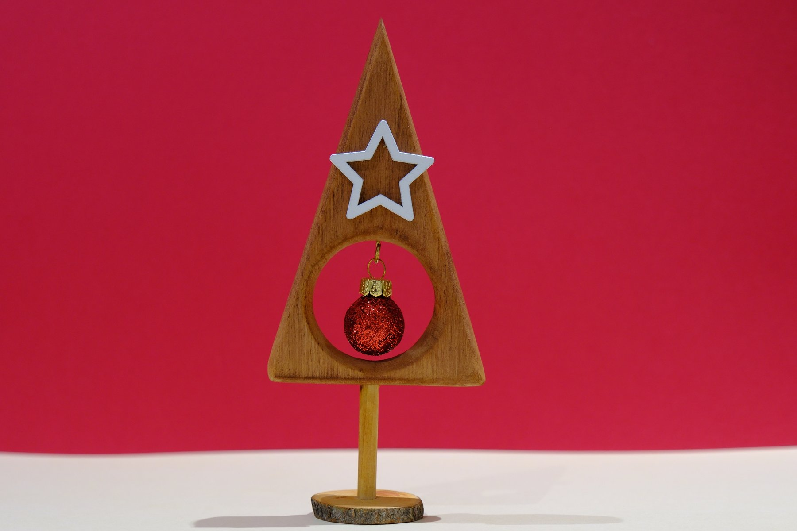

Estrella y esfera
Árbol de madera · 01
ARTESANÍA EN MADERA · NAVIDAD
Figuras de madera pintadas con cariño, una a una. Piezas únicas para llenar de calidez cada diciembre.
Ver la colección
LA COLECCIÓN
Árboles, personajes y adornos de madera: una colección hecha para descubrir sus detalles de cerca.
PIEZAS HECHAS PARA ACOMPAÑARTE
Escríbeme para consultar por una pieza.
Hablemos